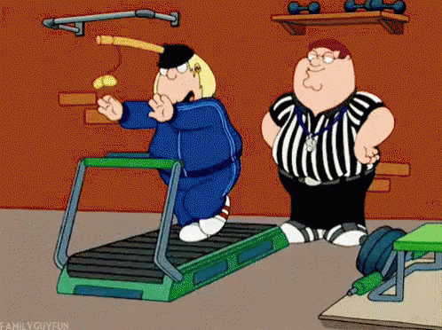

뭐? 인권침해?
언제부터인가 이 기구가 수감자들의 인권을 침해한다는 논란이 일기 시작했다.
당시 영국에서는 경범죄와 중범죄에 상관없이 모든 죄수들이 이 기구를 타는 형벌을 받아야했다.
이는 공평하지 못할 뿐만아니라 매우 가혹하다는 것이었다.

점점 다가오는 여름, 더 이상은 미룰 수 없다!다이어트를 시작하자!
유산소운동의 대표주자 런닝머신!!
우리가 러닝머신을 뛰면서 괴롭고 하기싫은 데는 이유가 있었다고!!
목적에 충실해도 너무 충실한 런닝머신! 너무 고통스러워!!
도대체 누가 이런걸 만든거야?
1820년 영국에서 한 죄수는 재판을 받는 도중 선택의 기로에 놓였다.
"사형과 무기징역"
당연히 죽는 것보다 사는 것이 나을테니, 평생을 수감소에서 살기로 결정한다.
하지만, 얼마 후 죄수는 자신의 선택을 후회하게 된다.
왜일까?
"통제가 안되는 수감자들.. 죄수들을 통제할 수 있는 기구가 없을까?"
"제게 좋은 생각이 있습니다."
영국의 기술자 윌리엄 큐빗이 죄수들을 통제할 기구를 만들기 시작한다.
24개의 바퀴살을 가진 거대한 바퀴형태로,
죄수들은 계단을 오르듯 제자리에서 위로 오르며 바퀴가 돌아가도록 해야했다.
바퀴가 회전할 때 발생하는 동력원으로 물을 푸거나 곡식을 빻았다.
이 기구를 처음 접한 죄수들은 대수롭지 않게 생각하며 비웃었다.
하지만
의외로 반복되는 단순함이 주는 공포감은 어마어마했다.
"정말 미칠 것 같아, 이렇게 계속 제자리에서 걷기만 하다니.."
당시 수감자들은 하루 6시간 이 기구를 밟아야했다.
여기서 끝이 아니다, 런닝머신은 성장했다! 수감자들을 더 고통스럽게 하기 위해!
기구는 시간이 지나면서 더욱 발전해 나중에는 죄수와 죄수 사이에 칸막이가 설치되어
서로 어떤 대화도 나눌 수 없게 된다.
이처럼 완전분리 된 공간안에서 수감자들은 극도의 공포감을 느끼게 되는데..
수감자들은 고통스러웠지만, 확실히 수감자들을 통제하는데 매우 효과적이었다.
이 사실이 알려지자, 이 기구는 영국 전역의 교도소에서 형벌도구로 각광받았고,
첫 보급 이후 10년만에 50곳 이상의 교도소에 도입된 것은 물론, 미국까지 전파되었다.
언제부터인가 이 기구가 수감자들의 인권을 침해한다는 논란이 일기 시작했다.
당시 영국에서는 경범죄와 중범죄에 상관없이 모든 죄수들이 이 기구를 타는 형벌을 받아야했다.
이는 공평하지 못할 뿐만아니라 매우 가혹하다는 것이었다.
결국 1898년 영국법원은 수감자들의 인권을 보호하는 교도소법을 통과시켰다.
경범죄와 중범죄의 처벌을 달리하였고, 이 기구의 사용역시 영국전역에서 금지되었다.
그렇게 이 가혹한 형벌도구는 역사 속에서 사라진 듯 했다.
그런데
사라진듯햇던 형벌도구가 뜻밖의 용도로 다시 등장하게 된다.
스트롱맨쇼를 진행하던 루이스 아틸라는 하체근육을 키우는 문제로 고민하고 있었다.
그러던 어느날,
교도소에서 사라진 형벌도구를 알게 된 그는, 이를 자신의 훈련기구로 삼기로 한다.
이것이 바로 우리가 흔히 알고있는 런닝머신이다!!
뿐만아니라 이 운동기구는 의료용으로 쓰이기도 했다.
이 기구가 이료용으로 가치가 있을거라는 생각에, 1인용으로 간소화해서 제작하였고
의료기기가 발달하지 않을 당시, 환자기 이 기구를 이용함으로
심박과 호흡이상증상을 보다 쉽게 확인해 심장과 폐질환을 진단할 수 있었다.
이후 런닝머신은 1970년대 미국의 조깅열풍과 함께 전 세계적으로 보급되기 시작했다.
왜냐? 헬스클럽에 런닝머신이 들어오기 시작했기 때문.
이제 우리가 왜 헬스장에 가는 것이 고통스러운지 조금이나마 이해가 되시죠?
고문기구를 이용하러 가는 것이니 아주 당연한 증상이었답니다:)
이렇게 고통스러운 다이어트지만,
여름을 위해 조금만 더 힘내볼까요?? 몸은 우리를 배신하지 않으니까요!
여름을 위해 다들 파이팅!!